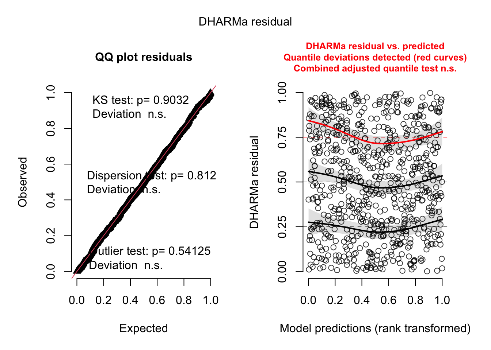
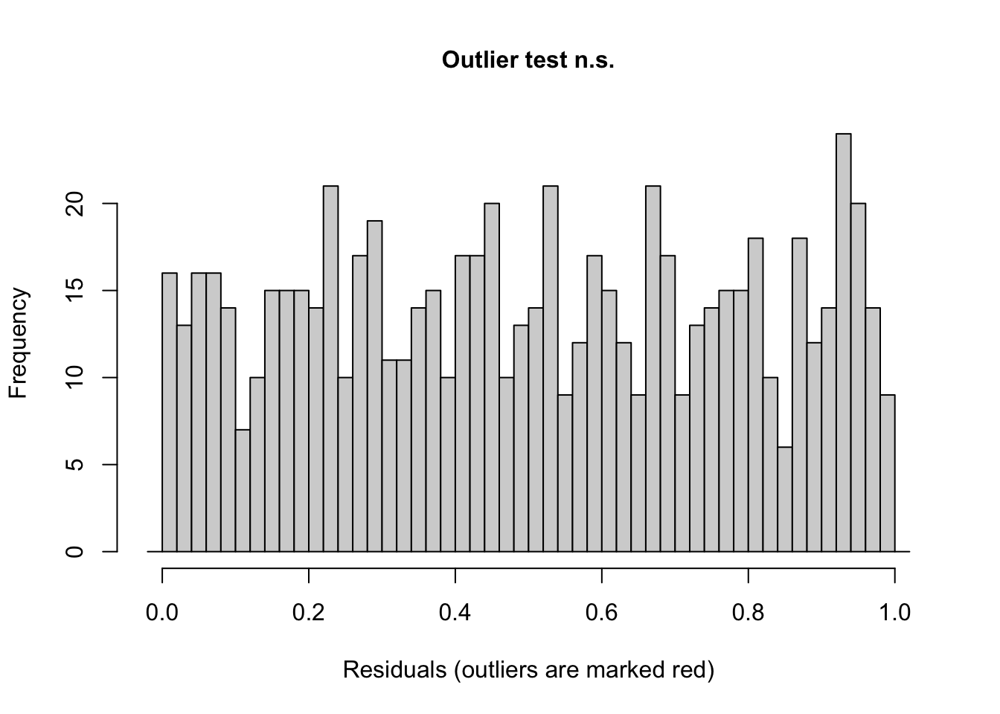
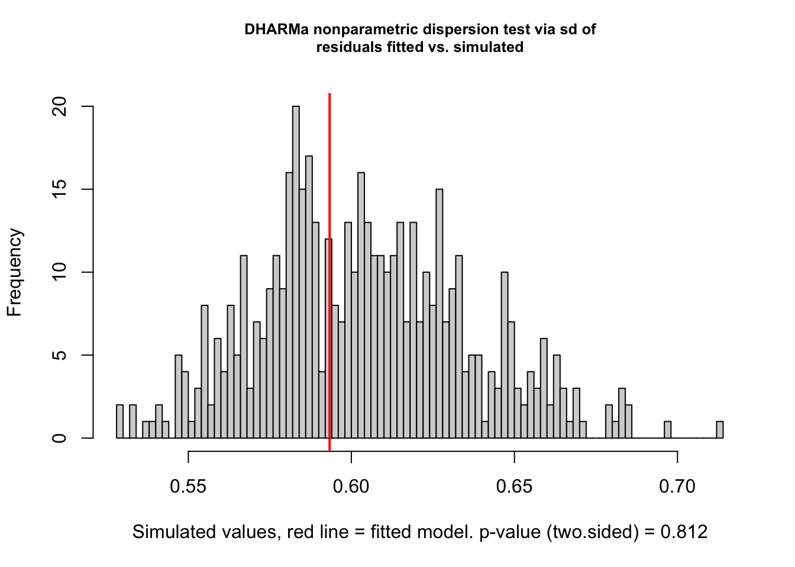
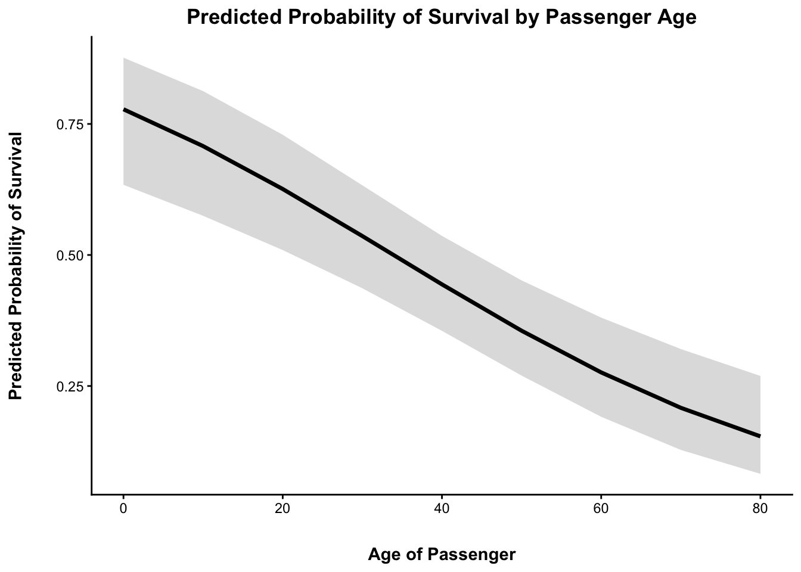

| Titanic Passenger Ages | |||
| Mean | SD | Min | Max |
|---|---|---|---|
| 29.69912 | 14.5265 | 0.42 | 80 |
| Passenger Survival Counts | |
| Died | 424 |
| Survived | 290 |
| Number of Passengers by Sex | |
| Female | 261 |
| Male | 453 |
| Number of Passengers by Class | |
| First Class | 186 |
| Second Class | 173 |
| Third Class | 355 |
| Titanic Passenger Ages | |||
| Mean | SD | Min | Max |
|---|---|---|---|
| 29.69912 | 14.5265 | 0.42 | 80 |
| Passenger Survival Counts | |
| Died | 424 |
| Survived | 290 |
| Number of Passengers by Sex | |
| Female | 261 |
| Male | 453 |
| Number of Passengers by Class | |
| First Class | 186 |
| Second Class | 173 |
| Third Class | 355 |
In terms of the passengers on the Titanic, the average age was 29.7 years. The age dispersion was quite high, with the youngest being just 0.42 years, or about 5 months old, and the oldest passenger being 80 years old. More people died than survived, being 424 versus 290 passengers respectively. The spread between men and women was not equal, with there being 1.74 times more men on board the ship. Third class passengers represented almost half of the ship (49.72%), while first and second class represented 26.05% and 24.23% respectively.
I believe that, at the time, the common societal norm of “women and children first” would have played a very large role in the survival rates of both female passengers and children. Because of this, I would say that sex and age will both be strong factors in our prediction model. Social economic status (ticket class) would also provide a good predictor of survival. First class passengers would have probably been given priority to lifeboats and have been closer to the upper deck to board them. In contrast, third class passengers might have been lower down on the ship, taken longer to get to the boats, and might have not had the opportunity to board them at all. Looking at a potential model, I predict that age, sex, and class status will predict survival rates, with class and sex being the strongest predictors.
The interpretation of the intercept in mod1 is the log-odds of survival for female passengers on the titanic. In mod2, the intercept changes to represent the log-odds of women in first class. Then in mod3, it represents a female first class passenger with an age of zero.
| Nested Model Comparison | ||||||||
| Model | AIC | BIC | Log-likelihood | Deviance | Residual df | Nested df | Nested χ² | Nested p |
|---|---|---|---|---|---|---|---|---|
| mod0: Null | 966.516 | 971.087 | −482.258 | 964.516 | 713 | — | — | — |
| mod1: Sex | 754.700 | 763.842 | −375.350 | 750.700 | 712 | 1 | 213.816 | < .001 |
| mod2: Sex + Pclass | 680.431 | 698.714 | −336.215 | 672.431 | 710 | 2 | 78.269 | < .001 |
| mod3: Sex + Pclass + Age | 657.283 | 680.138 | −323.642 | 647.283 | 709 | 1 | 25.148 | < .001 |
With each predictor added to the models, the AIC steadily declined from 966.516 in mod0 to 657.283 in mod3. The same is true for the BIC, from 971.087 for mod0 down to 680.138 for mod3. This suggests that adding sex, class, and age as predictors of survival balanced the fit of the models, without becoming overly complex. It appears as though mod3 provides the best fit for the data, with the lowest AIC and BIC of 657.283 and 680.138, respectively. All additions of predictors produce statistically significant improvements in model fit at p < .001, indicating that each variable added meaningful predictability to survival outcomes. Adding sex as a predictor in mod1 produced a χ² of 213.816 (p < .001), while sex and class together in mod2 produced χ² equal to 78.269 (p < .001). Finally, mod3 had a nested χ² of 25.148 (p < .001). Both the AIC/BIC and likelihood-ratio tests suggest that each predictor provides meaningful information about passenger survival, and that adding sex, class, and age onto one another progressively increases model fit.



Overall, the assumptions of the logistic regression model appear to be satisfied, with some caution in terms of the quantile deviations. Collinerarity was low, suggesting that the predictors do not overlap to the extent that it makes it difficult to accurately capture their unique contributions to survival odds. There was no evidence of complete separation, suggesting that neither sex, class, and age predicted survival perfectly. There was no evidence of unusual outliers or influential data points (p = 0.5412). Dispersion was not significant, at p = 0.812 There were enough events for each coefficient (72.5 events per coefficient, and 106 non events per coefficient).
In terms of linearity, the Q-Q plot illustrates that the residuals generally do not deviate from the uniform distribution and the relationship between predictors and the outcome are adequately represented. However, the DHARMa residuals vs. predicted plot shows that residual variability changes across the log-odds scale. This suggests that survival prediction error rates may differ across predictions. Considering the other assumptions of the logit appear to hold, the confidence in the model’s predictions are still strong.
Each predictor that was added to the null model significantly improved the fit at p < .001. However, the inclusion of age significantly increased fit above sex and class, with a nested χ² of 25.148 (p < .001). Across the models, mod3 displayed the lowest AIC and BIC of 657.283 and 680.138, respectively. This indicates that mod3 best balanced model fit without becoming overly complex. Diagnostic findings for mod3 largely supported it, with some caution about results from the DHARMa residual diagnostics indicating residual variability. Taken together, mod3 appears to demonstrate a strong representation of sex, class, and age on survival odds.
| mod3 Binary Logistic Regression Coefficients | |||||
| Predictor | Estimate | SE | 95% CI lower | 95% CI upper | p |
|---|---|---|---|---|---|
| (Intercept) | 3.777 | 0.401 | 2.991 | 4.563 | < .001 |
| Sexmale | −2.523 | 0.207 | −2.929 | −2.116 | < .001 |
| Pclass2 | −1.310 | 0.278 | −1.855 | −0.765 | < .001 |
| Pclass3 | −2.581 | 0.281 | −3.132 | −2.029 | < .001 |
| Age | −0.037 | 0.008 | −0.052 | −0.022 | < .001 |
In mod3, after holding age and class constant, the log odds coefficient for sex was -2.523. After exponential transformation, the odds ratio of survival was 0.08. This means that, holding age and class constant, male passengers had a 92% lower odds of survival than women. The log odds of survival for Plcass2 (second class) was -1.31, suggesting that second class passengers had lower odds of survival compared to first class, holding sex and age constant. The corresponding survival odds ratio for second class compared to first was 0.27. This means that second class passengers had a 73% lower odds of survival than those in first class. For Pclass3 (third class passengers) the log odds of survival were -2.581, which corresponded to a odds ratio of 0.076. So, when holding age and gender constant, a third class passenger would have had a 92.4% lower odds of survival compared to a first class passenger. Lastly the log odds of survival for age was -0.037, which corresponded to an odds ratio of 0.964. So, while holding sex and class constant, an increase in one year of age corresponded to a reduction of 3.63% odds of sruvival.
| Model | AIC | BIC | Log-likelihood | Deviance | Residual df | Nested df | Nested χ² | Nested p |
|---|---|---|---|---|---|---|---|---|
| mod3: Sex + Pclass + Age | 657.28 | 680.14 | −323.64 | 647.28 | 709.00 | 1.00 | 25.15 | 0.00 |
A binary logistic regression analysis was completed for the titanic data set to explore whether age, sex, and class predicted odds of surviving the shipwreck. mod3, capturing sex, class, and age, was chosen as the preferred model. Adding age to create mod3 significantly improved model fit (χ² = 25.15, p < .001), while also demonstrating the lowest AIC and BIC of 657.283 and 680.138, respectively. All three predictors of sex, age, and class were statistically significant at predicting survival odds (p < .001). Holding age and class constant, male passengers had 92% lower odds of survival than women. Second class passengers had 73% lower odds of surviving the wreck, and third class passengers had even worse odds of survival, 92.4% fewer odds than someone in first class. Younger passengers also had greater odds of survival. While holding sex and class constant, an increase in one year of age corresponded to a reduction of 3.63% odds of survival.

Sex and class were the strongest predictors of survival for the Titanic shipwreck, although all predictors (sex, class, and age) were significant (p < .001). The results from the model analysis align with my earlier predictions about the societal norm of “women and children first” providing some predictive value of who might have had been odds of surviving the crash. However, the idea of “women and children first” did not fully capture class as a predictor of survival, like the model did. Although the model demonstrated the predictive value of sex, class, and age for the odds of survival on the Titanic, due to the residual variability revealed in the diagnostic tests, the model does not necessarily predict survival odds equally across all passengers and predicted values.